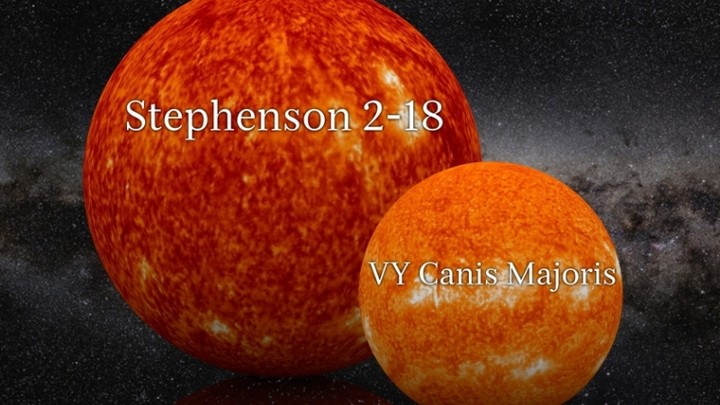

STEPHENSON 2-18: Conheça a maior estrela do universo atualmente
Você sabe que o Sol é uma estrela gigante em relação ao planeta Terra, já que seu diâmetro é de 1.392.700 km. O Sol é 109 mil vezes maior do que a Terra. Dentro do Sol cabem 1,3 milhões de planetas Terra, mas o Sol não é a maior estrela do universo, já que ela é só uma "anã amarela".
Stephenson 2-18
A Stephenson 2-18 é uma estrela supergigante vermelha e é considerada a maior estrela conhecida no universo, já que seu diâmetro é de 2.991.500.000 km. A Stephenson 2-18 é 2150 vezes maior do que o Sol, e se colocasse ela no lugar do Sol, as bordas mais externas passariam da órbita de Saturno, podendo chegar até próximo à órbita de Urano.
A temperatura dessa estrela e de 3200 K kelvins ou 2926 °C graus celsius, a sua luminosidade é de 437.000L☉ vezes mais do que o Sol, e está localizada na constelação de Scutum a 18.900 anos-luz de distância da Terra, dentro do enorme aglomerado de Stephenson 2, onde outras 25 supergigantes vermelhas fazem parte.